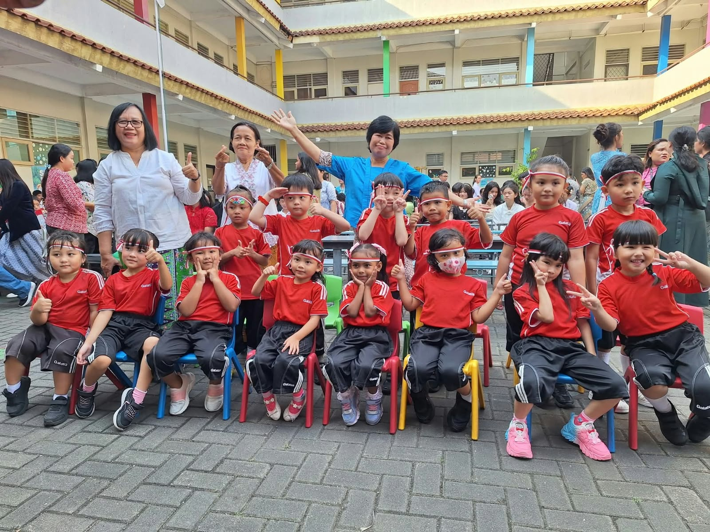
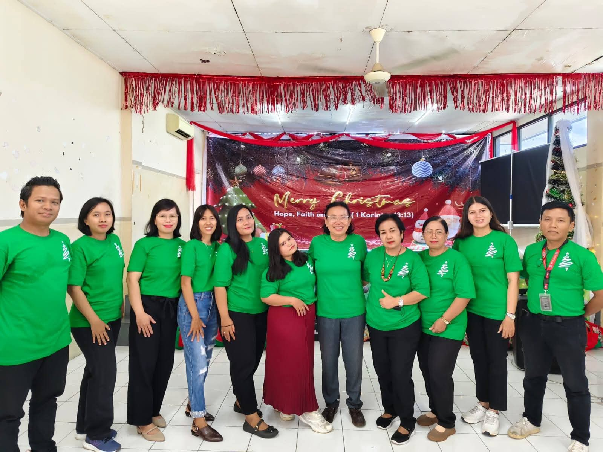
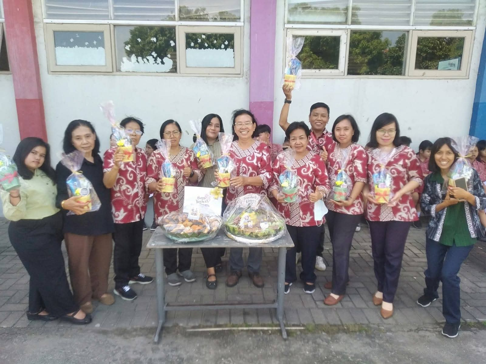
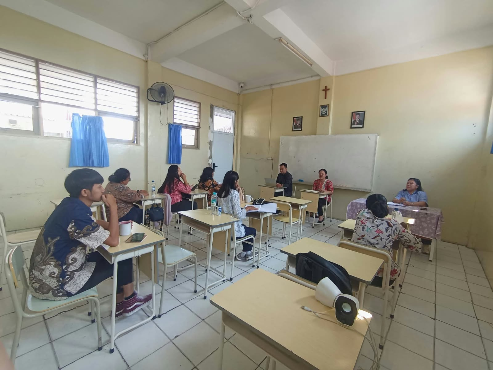
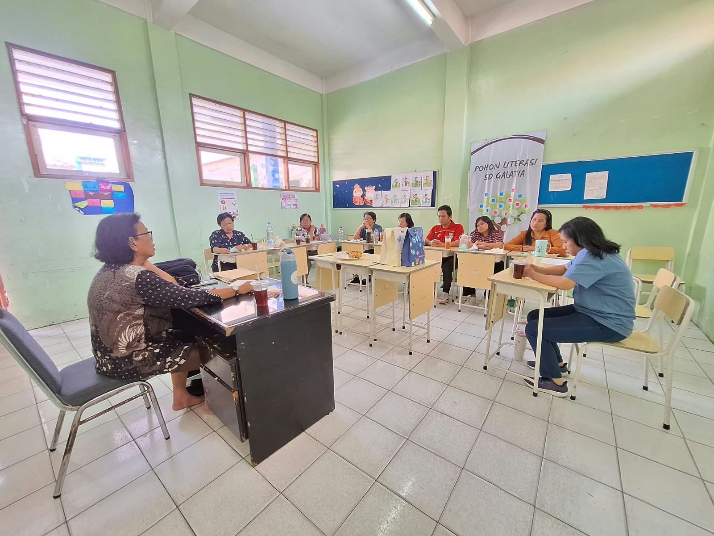
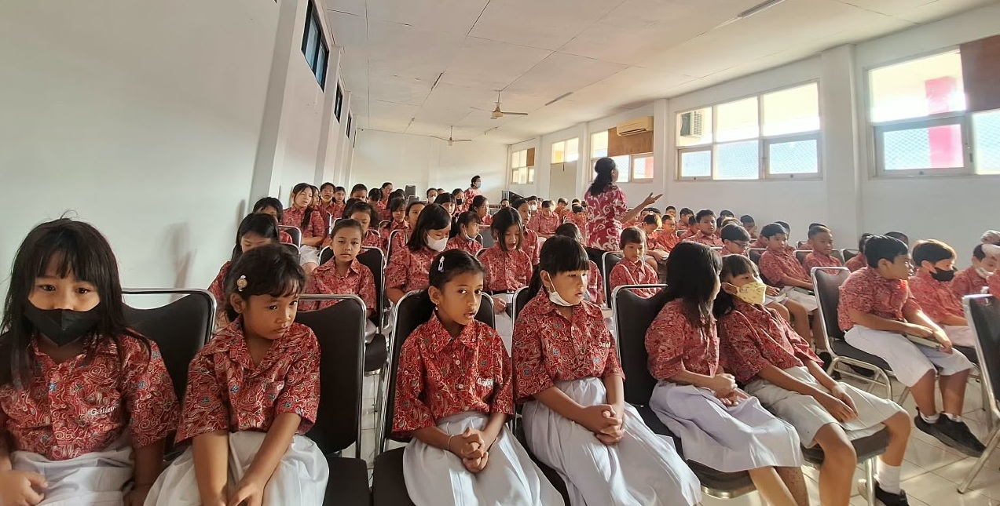
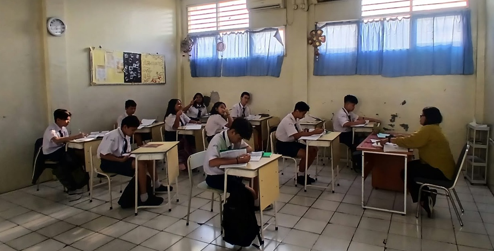
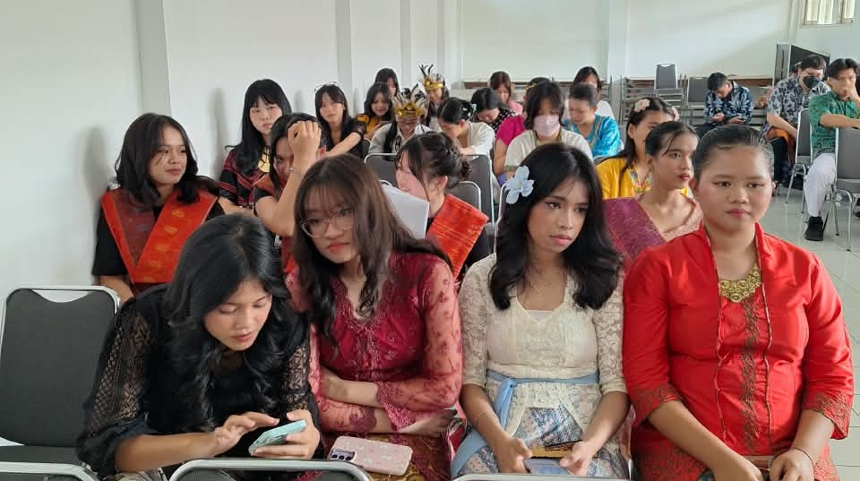

01
Taman Kanak-Kanak (TK)
Tempat Terbaik untuk Bertumbuh, Belajar, dan Bersukacita
Bekasi
Selamat Datang di SEKOLAH KRISTEN GALATIA BEKASI
Kenali Sekolah Kami →TENTANG KAMI
Kami berkomitmen menciptakan lingkungan belajar yang aman, menyenangkan, dan mendukung perkembangan setiap anak.
Selengkapnya →




PROGRAM PENDIDIKAN
Pendidikan yang berkualitas untuk setiap tahap pertumbuhan anak.

Tempat Terbaik untuk Bertumbuh, Belajar, dan Bersukacita

Mengembangkan kemampuan akademik, kreativitas, kedisiplinan, dan kemandirian siswa.

Mendorong siswa berpikir kritis, mengembangkan potensi, dan membangun karakter yang positif.

Mempersiapkan siswa menghadapi pendidikan tinggi, dunia kerja, dan masa depan.
GALERI FOTO
FASILITAS SEKOLAH